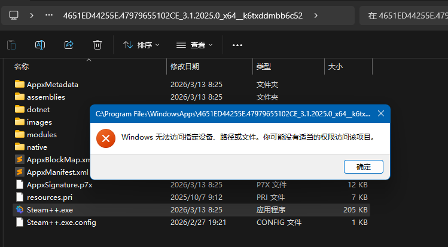

需求 在微软商店中安装的 UWP 应用，如果通过任务管理器直接找到其 exe 并启动，是无法正常启动的。

解决思路 希望启动的应用是 Watt toolkit
使用如下 powershell 命令
1 $app = Get-AppxPackage |? { (Get-AppxPackageManifest -Package $_ .PackageFullName).Package.Properties.DisplayName -like "*Watt*" }
可以获取到所有包含 Watt 名称的 UWP 应用的 PackageFullName, PackageFamilyName 和 Applications.Application.Id：
1 2 3 4 5 6 7 8 9 10 11 12 13 $app .PackageFullName$app .PackageFamilyNameGet-AppxPackageManifest $app ).Package.Applications.Application.Id
使用如下 powershell 命令启动 UWP 应用：
1 explorer.exe shell:appsFolder\4651 ED44255E.47979655102 CE_k6txddmbb6c52!App
格式是：
explorer.exe shell:appsFolder\<PackageFamilyName>!<AppId>
进一步写成 PowerShell 函数的形式：
1 2 3 4 5 6 7 8 9 10 11 12 13 14 15 16 17 18 19 20 21 22 23 24 25 26 27 28 29 30 31 32 33 34 35 36 37 38 39 40 41 42 43 44 45 46 47 48 49 50 51 52 53 54 55 56 57 58 59 60 61 62 63 64 65 66 67 68 69 70 71 72 73 74 75 76 77 78 79 80 81 82 83 84 85 86 87 88 89 90 91 92 93 94 95 96 97 98 99 100 101 102 103 104 105 106 107 108 109 110 111 112 113 114 function Start-UwpApp [CmdletBinding ()] param (Parameter (Mandatory = $false )]string ]$SearchKeyword = "Watt" ,Parameter (Mandatory = $false )]switch ]$Silent ,Parameter (Mandatory = $false )]switch ]$ShowDetails function Write-Info param (string ]$Message ,ConsoleColor ]$Color = [ConsoleColor ]::Whiteif (-not $Silent ) {Write-Host $Message -ForegroundColor $Color try {Write-Info "正在搜索名称包含 '$SearchKeyword ' 的 UWP 应用..." -Color Cyan$matchingApps = Get-AppxPackage | Where-Object { $manifest = Get-AppxPackageManifest -Package $_ .PackageFullName -ErrorAction Stop$manifest .Package.Properties.DisplayName -like "*$SearchKeyword *" if (-not $matchingApps -or $matchingApps .Count -eq 0 ) {$errorMsg = "未找到名称包含 '$SearchKeyword ' 的 UWP 应用！" if ($Silent ) {Write-Error $errorMsg else {Write-Host $errorMsg -ForegroundColor Redreturn $targetApp = $matchingApps [0 ]$packageFamilyName = $targetApp .PackageFamilyName$appId = (Get-AppxPackageManifest $targetApp -ErrorAction Stop).Package.Applications.Application.Idif ($ShowDetails -or (-not $Silent )) {Write-Info "`n找到的应用信息：" -Color GreenWrite-Info "应用显示名称：$ ((Get-AppxPackageManifest $targetApp ).Package.Properties.DisplayName)" -Color GreenWrite-Info "PackageFullName: $ ($targetApp .PackageFullName)" -Color GreenWrite-Info "PackageFamilyName: $packageFamilyName " -Color GreenWrite-Info "Application Id: $appId `n" -Color Green$launchUri = "shell:appsFolder\$packageFamilyName !$appId " Write-Info "正在启动应用：$launchUri " -Color CyanStart-Process explorer.exe -ArgumentList $launchUri -ErrorAction StopWrite-Info "`n应用启动命令已执行！" -Color Greencatch {$errorMsg = "执行过程中出现错误：$ ($_ .Exception.Message)" if ($Silent ) {Write-Error $errorMsg else {Write-Host $errorMsg -ForegroundColor Redreturn Start-UwpApp -SearchKeyword "Watt" -ShowDetails
参考